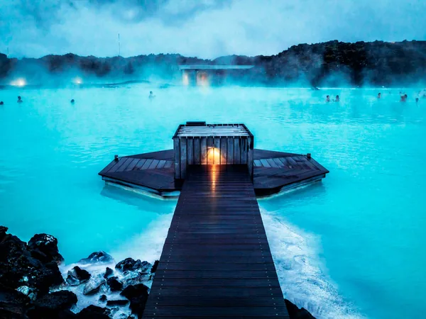
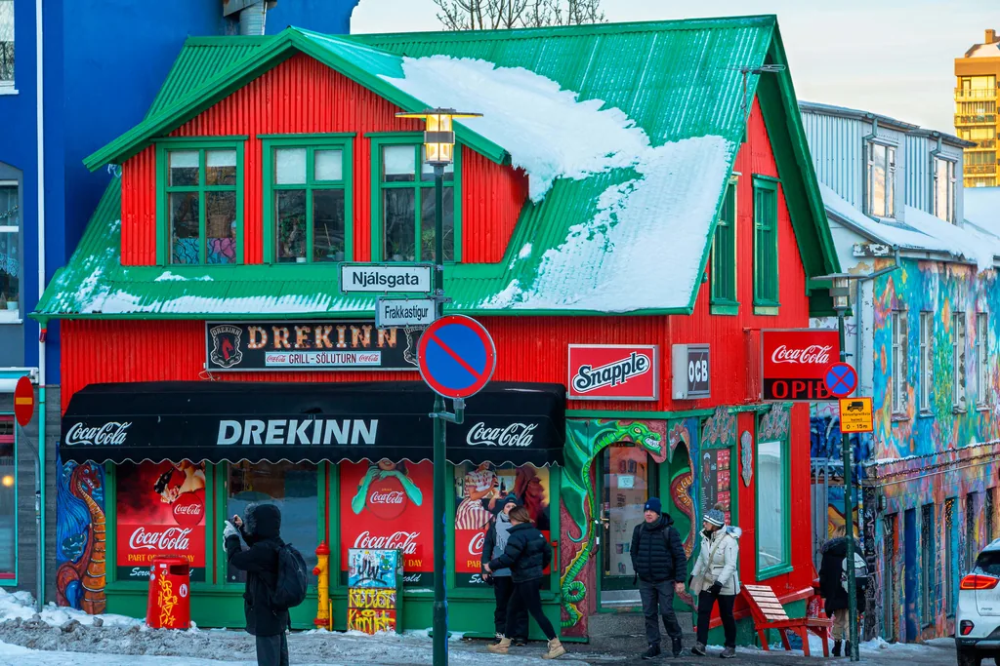
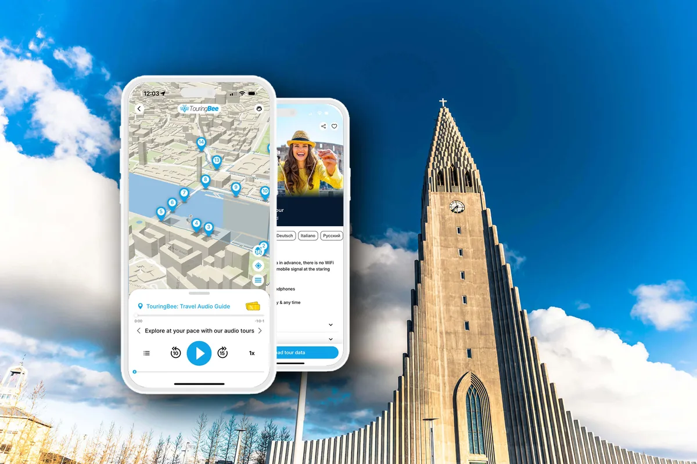

Reykjavík › Blue Lagoon
Blue Lagoon: was sie wirklich kostet und an welchem Tag der Reise sie hingehört
Sie liegt 20 Minuten vom Flughafen und 60 Minuten von Reykjavík entfernt. Aus dieser einen Tatsache folgt fast alles andere: der Preis, der erreichbare Bus und die Frage, ob der Besuch einen Tag in der Stadt kostet oder gar nichts.
Die Blue Lagoon liegt nicht in Reykjavík und auch nicht in der Nähe. Sie liegt bei Grindavík, an der Straße zwischen der Hauptstadt und dem Flughafen Keflavík: 20 Minuten vom Terminal, 60 Minuten von der Stadt. Beide Zahlen stammen aus dem eigenen Buchungssystem der Lagune, und zusammen sind sie das ganze Argument dieser Seite.
Wegen dieser Lage lautet die Frage nicht, ob man hinfährt. Sie lautet: an welchem Tag. An die Ankunft oder den Abflug gehängt, kostet die Lagune fast keine Zeit. Aus der Mitte einer Städtereise herausgeschnitten, kostet sie einen halben Tag, zwei Stunden Bus und einen Wecker um 06:30.
Wir veröffentlichen einen Audio-Spaziergang durch Reykjavík, also ist uns nicht gleichgültig, wie viele Ihrer Stunden die Lagune frisst. Genau deshalb zählt diese Seite sie laut mit und legt die Fahrpläne daneben, statt Ihnen zu erklären, die Lagune sei überbewertet.
Auf einen Blick
- Wo
- Norðurljósavegur 9, Grindavík — 20 Min. vom Flughafen Keflavík, 60 Min. von Reykjavík
- Comfort-Eintritt
- Beworben ab 88 €. An sechs geprüften Terminen: 92 bis 138 €
- Teuerste Stunde
- 16:00 oder 17:00 — an jedem einzelnen Termin
- Offizieller Bus
- Hin und zurück ab 67 € pro Person; Kinder bis 11 Jahre frei
- Mit Bus
- 182 € pro Kopf in unserem Samstags-Warenkorb; rund 159 € an einem günstigen Wochentag
- Busse zum Flughafen
- Drei pro Tag: 12:00, 14:30, 16:00
- Öffnungszeiten
- 08:00–22:00 den größten Teil des Jahres; 08:00–20:00 vom 1. Januar bis 31. Mai
- Letzter Slot
- Zwei Stunden vor Schließung, und aus dem Wasser geht es eine halbe Stunde früher
- Kinder
- Ab 2 Jahren. 2 bis 11 Jahre: 15 € (2.000 ISK). Bis 8 Jahre mit Schwimmhilfe
- Was zu prüfen ist
- Die Abflugzeit gegen diese drei Busse zum Flughafen
Was es tatsächlich kostet
Auf der Preisseite steht Comfort ab 88 €. Wir haben am 21. Oktober 2026 das Buchungssystem geöffnet und dasselbe Comfort-Ticket an sechs über das Jahr verteilten Terminen bepreist. Es waren nie 88 €.
| Termin | Günstigster Slot | Teuerster | Teuerste Stunde |
|---|---|---|---|
| Sa., 24. Oktober 2026 | 115 € | 138 € | 12:00 und 17:00 |
| Sa., 31. Oktober 2026 | 115 € | 138 € | 16:00 |
| Di., 3. November 2026 | 92 € | 126 € | 16:00–17:00 |
| Di., 24. November 2026 | 92 € | 126 € | 16:00–17:00 |
| Di., 19. Januar 2027 | 100 € | 134 € | 16:00–17:00 |
| Mi., 14. Juli 2027 | 111 € | 134 € | 07:00 und 15:00–17:00 |
Zwei Schlüsse hält diese Tabelle aus. Einer hält ihr nicht stand.
Was trägt. An allen sechs Terminen war die teuerste Stunde 16:00 oder 17:00 — ausgerechnet der Nachmittagsslot, den jede Reiseroute empfiehlt. Und die Spanne innerhalb eines einzigen Tages reichte von 23 bis 34 €, mehr als der Schritt von Comfort zu Premium: Am 24. Oktober bot das System dieses Upgrade für 23 € pro Person an.
Was nicht trägt. „Morgens ist es billiger“ gilt nicht das ganze Jahr. Der Slot um 08:00 lag an fünf von sechs Terminen am Tagesminimum oder dicht darunter — am 14. Juli aber kostete er 123 €, während 20:00 und 21:00 bei 111 € standen. Im Hochsommer wandern die günstigen Stunden in den späten Abend, der im Juli noch taghell ist.
Und was die Tabelle nicht zeigt: Es wird voll. An demselben Samstag im Oktober waren 11:00, 15:00 und 16:00 bereits nicht mehr verfügbar, und für 12:00 standen noch sechs Plätze. „Vorausbuchen ist unerlässlich“ ist hier keine Werbefloskel.
Die Kategorien, und ob sich ein Upgrade lohnt
| Ticket | Listenpreis | Was dazukommt |
|---|---|---|
| Comfort | ab 11.990 ISK | Lagune, Sauna, Dampfbad, Kieselerdemaske, Handtuch, Schließfach, ein alkoholfreies Getränk |
| Premium | ab 14.990 ISK | Bademantel, ein Getränk nach Wahl an der Bar im Wasser, zwei weitere Masken und eine Maske für zu Hause |
| Signature | ab 18.490 ISK | Ein zweites Getränk und Pflegeprodukte im Wert von 14.000 ISK zum Mitnehmen |
| Retreat Spa | ab 682 € je Umkleide | Fünf Stunden, private Umkleide, Zugang zur abgeschirmten Retreat Lagoon |
Der Premium-Aufschlag rechnet sich zuverlässig nur über den Bademantel, und nur im Winter: Der Weg zwischen Wasser und Gebäude ist im Februar mehr wert als das Getränk. Signature ist Kosmetik mit Rabatt, also eine Einkaufsentscheidung und keine Badeentscheidung.
Bevor Sie zum Direktpreis buchen
Der Eintritt wird auch im Paket mit Transfer und weiteren Stopps verkauft, und manchmal schlägt das Bündel den getrennten Kauf beider Teile. Ein Blick auf das Angebot für Ihre Termine lohnt sich.
Tickets und Transfer zur Blue Lagoon Weitere Sehenswürdigkeiten in IslandDie drei Busse, die über den Tag entscheiden
Jetzt der Teil, den fast kein Reiseführer druckt. Zwischen Lagune und Reykjavík fährt der Partner reichlich. Zwischen Lagune und Flughafen sehr wenig.
| Strecke | Abfahrten | Fahrzeit |
|---|---|---|
| Flughafen Keflavík → Lagune | 07:30, 09:30, 12:30, 16:30 | 20 Min. |
| Lagune → Flughafen Keflavík | 12:00, 14:30, 16:00 | 20 Min. |
| Reykjavík → Lagune | Stündlich 07:00–18:00 vom 21. August bis 31. Januar; stündlich 07:00–16:00 im Februar und März; fünf Fahrten täglich im April und Mai | 60 Min. |
| Lagune → Reykjavík | Stündlich 12:15–22:15 vom 21. August bis 31. Januar; stündlich 12:15–20:15 im Februar und März | 60 Min. |
Drei Abfahrten zum Flughafen, die letzte um 16:00. Wir haben das im Buchungsvorgang selbst geprüft und nicht von einer Fahrplanseite übernommen: Bei gewähltem Vormittagsslot bot die Ausstiegsliste 12:00, 14:30 und 16:00 an, sonst nichts.
Ein Vorbehalt zu dieser Tabelle. Der veröffentlichte Fahrplan des Partners ordnet den Januar noch der Herbstsaison zu, womit Busse bis 22:15 in die Stadt führen. Die Öffnungszeiten der Lagune schließen die Türen jedoch ab dem 1. Januar um 20:00, und unsere Preisabfrage für den 19. Januar bestätigte das. Buchen Sie den Bus im Bestellvorgang der Lagune: Dort erscheinen nur Abfahrten, die es an Ihrem Termin gibt.
Legt man das nun neben die Preistabelle, fällt etwas Brauchbares heraus. Für die günstigen Abendslots gibt es überhaupt keinen Flughafenbus — wer um 18:00, 19:00 oder 20:00 hineingeht, sitzt fest, wenn als Nächstes der Flughafen ansteht. Der Vormittagsslot dagegen, der den größten Teil des Jahres am Tagesminimum oder dicht darunter liegt, passt zu allen drei Abfahrten.
Am Abflugtag sind die günstige Wahl und die mögliche Wahl also dieselbe Wahl. Ein seltener Glücksfall, den man mitnehmen sollte.
In die andere Richtung, aus der Stadt heraus, ist die Rechnung weniger freundlich. Für einen Slot um 08:00 empfiehlt das System den Bus um 07:00 ab Reykjavík und schreibt wörtlich: seien Sie um 06:30 bereit — an der zugewiesenen Haltestelle muss man eine halbe Stunde vor Abfahrt stehen. Zugewiesen ist dabei wörtlich zu nehmen: Hotels in der Innenstadt werden nicht vor der Tür bedient. Man wird an einen von fünf Punkten geschickt — Lækjargata, Harpa, Safnahúsið, Austurbær oder den Busbahnhof BSÍ — und wartet dort im Dunkeln.
An welchem Tag
Der Buchungsvorgang des Partners geht davon aus, dass man drei Stunden in der Lagune verbringt. Nimmt man das als Einheit, sehen die drei Varianten so aus.
| Ankunftstag | Abflugtag | Eigener Tag aus Reykjavík | |
|---|---|---|---|
| Anfahrt | Flughafenbus: 07:30, 09:30, 12:30 oder 16:30 | Stadtbus hin, Flughafenbus zurück | Stadtbus in beide Richtungen |
| Fahrzeit | 20 Min., auf einer Strecke, die ohnehin anstand | 60 Min. hin, 20 Min. zum Terminal | Zwei Stunden plus 30 Min. Warten |
| Passender Slot | Fast jeder | Nur vormittags: letzter Bus um 16:00 | Jeder |
| Gepäck | Aufbewahrung am Parkplatz, 1.000 ISK je Stück | Ebenso | Kein Thema |
| Was es kostet | Nichts: Die Strecke stand ohnehin an | Nichts, wenn der Flug nach etwa 15:00 geht | Einen halben Tag Stadtzeit |
Der Abflugtag ist die beste Variante, solange der Flug spät genug liegt. Der Bus um 12:00 setzt gegen 12:20 am Terminal ab, der um 14:30 gegen 14:50 — alles ab dem mittleren Nachmittag geht also bequem auf. Slot um 08:00 oder 09:00 buchen, Koffer abgeben, um 12:00 oder 14:30 losfahren: Die toten Stunden zwischen Hotelauszug und Check-in sind damit zu dem geworden, weswegen Sie gekommen sind.
Der Ankunftstag folgt knapp dahinter und ist die freundlichere Variante bei müder Landung. Die Lagune liegt 20 Minuten von der Terminaltür entfernt, und vom 21. August bis 31. Januar fährt stündlich bis 22:15 ein Bus weiter nach Reykjavík. Der Haken sind die Abfahrten ab Flughafen: Es gibt nur vier, die Landung muss also vor 07:30, 09:30, 12:30 oder 16:30 liegen.
Ein eigener Tag aus Reykjavík ist die Variante mit dem Fragezeichen. Zwei Stunden Bus, eine halbe Stunde an der Haltestelle, drei Stunden im Wasser: Das ist der größte Teil eines kurzen Tages. Und es ist der Tag, den Sie nicht in der Stadt verbringen. Bei vier Nächten geht das. Bei zwei ist es teuer, und zwar in einer Währung, die nicht Kronen heißt.
Was es für das Geld gibt
Rund 10.000 Quadratmeter mineralreiches Meerwasser bei 37–40 °C, etwas über einen Meter tief — der Lageplan nennt unter 1,3 m, das Hilfecenter 1,4 m. Drumherum: eine Sauna mit Aussicht, ein Dampfbad, eine in den Fels geschlagene Dampfhöhle, ein Wasserfall zum Daruntertreten. Dazu eine Bar im Wasser, eine Maskenbar und eine Ruhezone, in der Telefone nicht erlaubt sind. Zweimal täglich wird die Geschichte des Ortes erzählt. Es ist größer und sonderbarer, als die Fotos vermuten lassen, und das Wasser hat wirklich diese Farbe.
Ein Geheimtipp ist es dagegen nicht. An einem Nachmittag der Hochsaison ist das eine große internationale Attraktion an der Kapazitätsgrenze, und so fühlt es sich auch an. Die Slots am Morgen und am späten Abend sind ruhiger und zugleich günstiger — derselbe Rat aus zwei Richtungen.
Zu den Zusatzleistungen, die der Buchungsvorgang mit Nachdruck anbietet: Floating in der Gruppe 45 €, Frühstücksbox 23 €, Bademantel oder Hausschuhe ab 15 €, Massage im Wasser ab 160 €, Floating-Therapie ab 199 €. Das Zwei-Gänge-Menü im Lava zusammen mit dem Premium-Eintritt kostet 199–222 € komplett. Nichts davon ist nötig und alles davon ist gut; entscheiden Sie nur vor der Zahlungsseite und nicht auf ihr.

Kinder, Gepäck und Kleingedrucktes
Das Mindestalter liegt bei zwei Jahren: Das Hilfecenter schreibt, der Körper jüngerer Kinder sei zu empfindlich für den Mineralgehalt, und buchbar sind sie auch nicht. Von 2 bis 11 Jahren kostet der Eintritt 15 €, in der Liste 2.000 ISK. Kinder bis einschließlich 8 Jahren müssen Schwimmhilfen tragen, die am Eingang kostenlos ausgegeben werden, und eine erwachsene Person darf höchstens zwei Kinder beaufsichtigen. Im Bus fahren Kinder bis 11 Jahre frei, doch das Widget des Partners teilt die Altersgruppen anders ein als die Lagune — bei 12- und 13-Jährigen lohnt der genaue Blick.
Das Schließfach ist inbegriffen und nimmt Wertsachen und eine Tasche in Rucksackgröße auf. Alles Größere geht in die Aufbewahrung am Parkplatz, 1.000 ISK je Stück, und genau das macht die Varianten Ankunftstag und Abflugtag überhaupt erst möglich.
Zwei Zeitfallen. Der letzte buchbare Slot liegt zwei Stunden vor Schließung, und aus dem Wasser soll man eine halbe Stunde vor Türschluss. Der letzte Einlass des Tages kauft damit 90 Minuten und nicht die drei Stunden, von denen der Transfervorgang ausgeht. Die zweite Falle: Die Winterzeiten wechseln am 1. Januar und nicht am 1. Februar. Die Lagune selbst setzt 08:00–20:00 vom 1. Januar bis 31. Mai an, während die Fahrplanseite des Partners den Januar noch mit dem späten Schließen führt.
Die Vulkanfrage
Sie verdient eine klare Antwort statt Schweigen oder Alarm. Zwischen Dezember 2023 und August 2025 brach die Kraterreihe Sundhnúkur wenige Kilometer von der Lagune entfernt neun Mal aus, und die Lagune schloss in dieser Serie kurzfristig. Am 21. Oktober 2026 zeigte das isländische Wetteramt keine Warnungen und normale Bedingungen.
Nichts daran spricht gegen eine Buchung. Es spricht dafür, den Status am Morgen des Besuchs zu prüfen und die Lagune nach Möglichkeit vom kritischen Pfad des letzten Reisetags fernzuhalten. Und dafür, die Straße 43 zu fahren statt dem Navi zu folgen: Die Lagune warnt auf der eigenen Seite, dass manche Apps noch veraltete Routen anzeigen.
Blue Lagoon oder Sky Lagoon
Beide sind geothermal, beide sind gebaut, und was sie trennt, ist nicht das, was die meisten vermuten.
| Blue Lagoon | Sky Lagoon | |
|---|---|---|
| Aus der Innenstadt Reykjavíks | 60 Minuten je Richtung mit dem Bus | Kurze Fahrt; passt in einen Abend |
| Vom Flughafen Keflavík | 20 Minuten, und zwar auf dem Weg | Ein Umweg |
| Standardeintritt | Comfort mit 11.990 ISK gelistet; genannt wurden uns 92 bis 138 € | Saman ab 14.990 ISK, an manchen Terminen 16.990 ISK |
| Was den Preis bewegt | Datum und Uhrzeit | Das Datum. Die Uhrzeit bewegte ihn bei unserer Prüfung nicht |
| Zeit aus der Reise | Ein halber Tag, sofern nicht an einen Flug gehängt | Ein Abend |
| Was es gibt | Die Weite, die Dampfhöhle, die Farbe, das Lavafeld | Das Ritual in sieben Schritten und das Meer am Horizont |
Beachten Sie, was diese Tabelle nicht sagt. Die Blue Lagoon ist nicht die teure von beiden. Ihre günstigen Vormittagsslots unterbieten das Standardticket der Sky Lagoon, und spürbar teurer sind nur die späten Nachmittagsslots. An den geprüften Terminen kostete der Weg von der günstigsten zur teuersten Stunde eines einzigen Tages in der Blue Lagoon ungefähr so viel wie der gesamte Listenabstand zwischen beiden Lagunen.
Die Wahl entscheidet sich also in Stunden, nicht in Kronen. Wenn die Tage da sind — und vor allem, wenn sich die Lagune an einen Flug hängen lässt — fahren Sie zur Blue Lagoon: Die Landschaft dort draußen ist die, die gemeint ist, wenn jemand „Island“ sagt. Ist die Reise kurz und jeder Nachmittag vergeben, bedient Sky Lagoon dasselbe Bedürfnis aus der Stadt heraus.
Der Audioguide
Hängt man die Lagune an einen Flugtag, bleiben alle Stadtstunden erhalten. Hier eine Verwendung für eine davon.

TouringBee-Audioguide für Reykjavík
- Startet, wann Sie wollen. Nützlich an einem Tag, den ohnehin ein Busfahrplan zerschneidet
- Funktioniert vollständig offline — unterwegs sind keine mobilen Daten nötig
- Pause jederzeit. Kaffee, ein Laden, ein Kirchturm, dann weiter
- Eine Zahlung, ein Jahr. Beim zweiten Mal gehen, falls das Wetter den ersten Versuch verdirbt
Sechs Fehler
- 16:00 oder 17:00 buchen. An jedem geprüften Termin die teuerste Stunde und zugleich die vollste. Der Wechsel auf 08:00 sparte 23 bis 34 € pro Person.
- Den Abflugtag um einen Abendslot herum planen. Der letzte Bus zum Flughafen fährt um 16:00. Nehmen Sie den Vormittag.
- Mit 88 € kalkulieren. Das Günstigste, das uns angeboten wurde, waren 92 €, und mit dem offiziellen Bus landet eine Fahrt aus Reykjavík bei etwa 159 bis 182 € pro Person.
- Es auf den Tag selbst schieben. Slots werden knapp: An einem Samstag im Oktober waren bereits drei Tagesstunden vergeben.
- Den letzten Slot für ein langes Bad nehmen. Der Einlass endet zwei Stunden vor den Türen, und aus dem Wasser geht es noch eine halbe Stunde früher.
- Dem Navi vertrauen. Fahren Sie Grindavíkurvegur, die Straße 43, und folgen Sie den Schildern: Die Lagune schreibt, manche Apps leiten noch auf dem alten Weg.
Häufige Fragen
Was kostet die Blue Lagoon wirklich?
Die Website nennt den Comfort-Eintritt ab 88 €. An sechs Terminen, die wir im hauseigenen Buchungssystem geprüft haben, lag der günstigste Slot bei 92 € und der teuerste bei 138 € — für genau dasselbe Ticket. Dazu der offizielle Bus hin und zurück ab 67 € pro Person: Unser Warenkorb für zwei Erwachsene an einem Samstag stand bei 364,56 €, also 182 € pro Kopf. An einem günstigen Wochentag sind es eher 159 €.
Zu welcher Tageszeit ist die Blue Lagoon am günstigsten?
An allen sechs geprüften Terminen war 16:00 oder 17:00 die teuerste Stunde des Tages. Der Slot um 08:00 lag an fünf von sechs Terminen am Tagesminimum oder dicht darunter; die Ausnahme ist Mitte Juli, wo das Minimum auf 20:00 und 21:00 wandert. Die Spanne innerhalb eines Tages reichte von 23 bis 34 € und ist damit größer als der Schritt in die nächste Ticketkategorie.
Wie kommt man vom Flughafen Keflavík zur Blue Lagoon?
Der Transferpartner fährt ganzjährig viermal täglich ab Flughafen: 07:30, 09:30, 12:30 und 16:30. Die Fahrt dauert 20 Minuten. Ab Reykjavík sind es 60 Minuten, den größten Teil des Jahres stündlich, und an der zugewiesenen Haltestelle muss man 30 Minuten vor Abfahrt stehen. Es fahren auch andere Anbieter; die Zufahrt ist die Straße 43, Grindavíkurvegur.
Lohnt sich die Blue Lagoon auf dem Weg zum Flug?
Ja, und das ist die beste Art, sie zu nutzen — aber es fahren nur drei Busse täglich von der Lagune zum Flughafen: 12:00, 14:30 und 16:00. Deshalb funktioniert der Vormittagsslot, und der gehört zufällig zu den günstigsten Stunden. Für die billigen Abendslots gibt es überhaupt keinen Flughafenbus. Großes Gepäck wird am Parkplatz für 1.000 ISK je Stück aufbewahrt.
Blue Lagoon oder Sky Lagoon?
Nicht über den Preis, bei dem die meisten Vergleiche beginnen. Der Comfort-Eintritt der Blue Lagoon steht mit 11.990 ISK in der Liste, das Saman-Ticket der Sky Lagoon mit 14.990 ISK, und die Spanne zwischen der günstigsten und der teuersten Stunde der Blue Lagoon entspricht ungefähr dem Abstand zwischen beiden Lagunen. Der Unterschied ist die Zeit: Sky Lagoon passt in einen Abend, die Blue Lagoon kostet einen halben Tag.
Schließt die Blue Lagoon wegen des Vulkans?
Das ist vorgekommen. Zwischen Dezember 2023 und August 2025 brach die Kraterreihe Sundhnúkur wenige Kilometer entfernt neun Mal aus, und die Lagune schloss in dieser Serie kurzfristig. Am 21. Oktober 2026 zeigte das isländische Wetteramt keine Warnungen und normale Bedingungen. Die praktische Regel bleibt: am Morgen des Besuchs den Status prüfen und den letzten Reisetag nicht daran aufhängen.
Weiterlesen
- Reykjavík auf eigene Faust zu Fuß — die Route Halt für Halt und was der Audioguide dazugibt
- Vom Flughafen Keflavík in die Stadt — die Transfers, an die der Lagunentag andockt
- Sky Lagoon — die, die in einen Abend passt
- Reykjavík an einem Tag — der Tag, den die Lagune sonst nimmt
- Hallgrímskirkja und der Turm — Tickets, Zeiten und die Grenze um 16:45
- Nordlichter — wann der Himmel dunkel genug ist und wo man steht
- Kostenlose Stadtführungen — wer sie macht und welche Abfahrt zu nehmen ist
- Der komplette Reykjavík-Guide — der Rundgang, die Ausflüge und die Jahreszeiten
- Alle Reykjavík-Guides
Kurzfassung
Hinfahren, aber an einem Flugtag. Die Lagune liegt 20 Minuten vom Terminal und eine Stunde von der Stadt entfernt, also kostet das Anhängen an Ankunft oder Abflug nichts, während eine eigene Fahrt einen halben Tag kostet.
Buchen Sie einen Vormittagsslot. Er gehört den größten Teil des Jahres zu den günstigsten Stunden, er ist das ruhige Ende des Tages, und am Abflugtag erreicht nur er einen Bus zum Flughafen. Und kalkulieren Sie ehrlich: mit Bus etwa 159 bis 182 € pro Person, nicht die 88 € von der Preisseite.
Zwanzig Minuten vom Terminal, eine Stunde von der Stadt
Legen Sie die Lagune auf einen Flugtag, und die Stadt behält alle ihre Stunden. Hier eine Möglichkeit, sie auszugeben.
TouringBee veröffentlicht einen selbstgeführten Audioguide für Reykjavík. Deshalb interessiert uns, wie viele Stunden eines Städteaufenthalts eine Fahrt zur Lagune kostet, und deshalb legen wir die Fahrpläne hin, statt aus ihnen zu argumentieren. Einige Links auf dieser Seite sind Affiliate-Links: Bei einer Buchung darüber erhalten wir unter Umständen eine Provision, für Sie ohne Aufpreis. Die Eintrittspreise wurden am 21. Oktober 2026 im Buchungssystem der Lagune für sechs einzelne Termine abgelesen, gelten pro Erwachsenem für den Comfort-Eintritt, ändern sich mit Datum und Uhrzeit und werden mit Ihren nicht übereinstimmen. Fahrzeiten, Tarife und Fahrpläne stammen aus demselben Buchungsvorgang und aus dem veröffentlichten Fahrplan des Partners vom selben Tag. Prüfen Sie es immer vor der Reise. Quellen: bluelagoon.com, support.bluelagoon.com, destinationbluelagoon.is, en.vedur.is.